Menurut Bank Dunia, kemiskinan ekstrem terjadi
ketika seseorang hidup dengan
pendapatan di bawah standar minimum yaitu sebesar US$1,90 per hari berdasarkan paritas
daya beli (Purchasing Power Parity/PPP). Mereka yang masuk kategori ini biasanya kesulitan
memenuhi kebutuhan dasar seperti makanan, air bersih, tempat tinggal, dan sanitasi.
Makanan
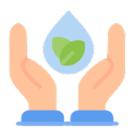
Air Bersih
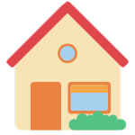
Tempat Tinggal
Sanitasi
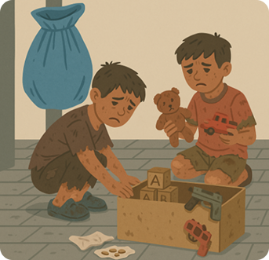
Pada tahun 2020, sekitar 2,25 persen penduduk Indonesia hidup dalam
kemiskinan ekstrem. Namun empat tahun kemudian, angka itu berhasil ditekan menjadi hanya 0,60
persen. Bahkan, dalam laporan Indonesia Poverty Assessment (2023), Bank Dunia mencatat Indonesia
telah memenuhi target penghapusan kemiskinan ekstrem sejak 2022 dengan capaian di bawah 1,5
persen.
Keberhasilan ini didorong oleh pertumbuhan ekonomi inklusif dan program
perlindungan sosial yang kuat.
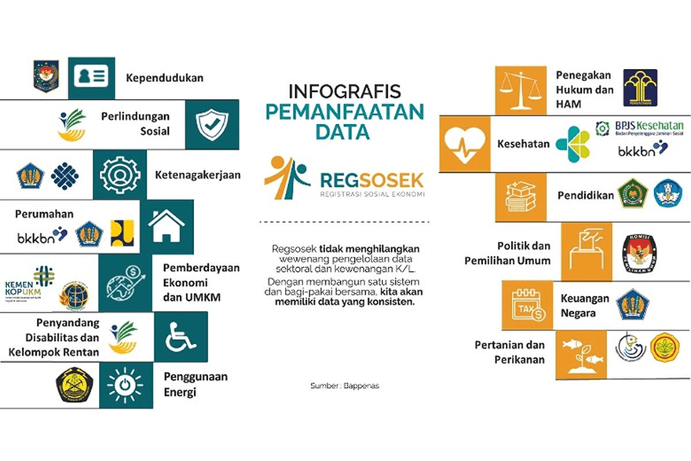
Dari Soeharto hingga Prabowo: Estafet
Jargon Anti Kemiskinan
trilogi pembangunan
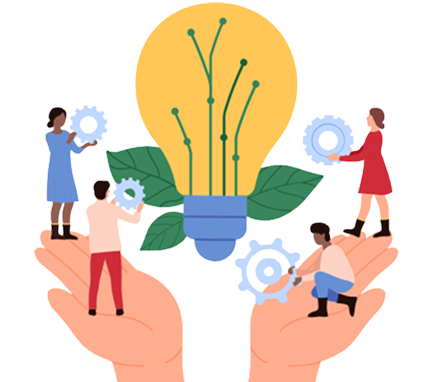
Gotong royong dan keadilan sumber daya
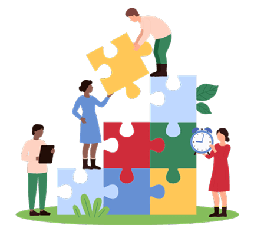
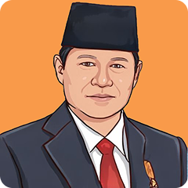
Pro-poor dan pro-growth
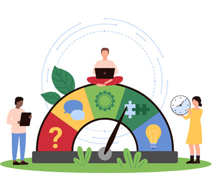
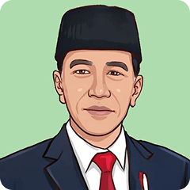
Pemerataan akses pendidikan, kesehatan, dan kesempatan kerja
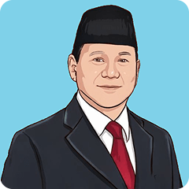
Perlindungan sosial dan peningkatan kemampuan ekonomi rakyat
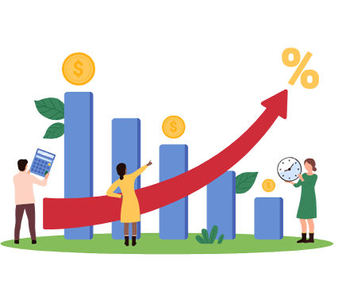
Upaya menghapus kemiskinan ekstrem bukan semata
kebijakan politik, tapi
amanat konstitusi.
Pasal 34 ayat (1) UUD 1945 menyatakan bahwa “fakir miskin dan anak-anak
terlantar dipelihara
oleh negara.” Sementara Pasal 27 ayat (2) menegaskan bahwa setiap warga negara
berhak atas
pekerjaan dan penghidupan yang layak.
Konstitusi juga menegaskan hak atas pendidikan dan kesehatan.
Pasal 28H ayat (1) menyebutkan bahwa setiap orang berhak hidup sejahtera lahir dan
batin, memiliki tempat
tinggal, lingkungan yang sehat, dan layanan kesehatan. Pasal 31 ayat (1) dan (2) menjamin hak
pendidikan dasar
yang wajib disediakan dan dibiayai oleh negara.
Tiga pilar utama untuk menciptakan kehidupan yang layak pun ditegaskan, yaitu pekerjaan,
pendidikan dan kesehatan, serta jaminan sosial.
Dari Pendidikan hingga Pemberdayaan
Penghapusan kemiskinan ekstrem tidak cukup dengan memberi bantuan.
Masyarakat harus diberdayakan. Karena itu, pemerintah menjalankan beragam program untuk
meningkatkan kemampuan dan kapabilitas rakyat.
Program Andalan Penghapusan
Kemiskinan Ekstrem Indonesia
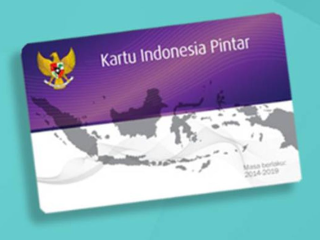
Pengurangan beban pengeluaran. Mencakup jaminan sosial, bantuan sosial, dan subsidi tepat sasaran
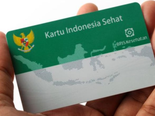
Peningkatan pendapatan masyarakat. Mencakup program pemberdayaan, kewirausahaan, dan pendidikan vokasi
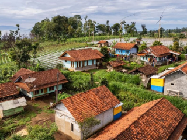
Penurunan jumlah kantong kemiskinan. Mencakup perbaikan RTLH, kawasan lingkungan, dan sanitasi
Pemberdayaan Ekonomi: Pembinaan keluarga dan Kredit Usaha Rakyat (KUR).
Di sisi lain, pembangunan wilayah, baik desa maupun kota, diarahkan untuk
meningkatkan kualitas permukiman dan akses ke hak-hak dasar: infrastruktur pendidikan,
kesehatan, air bersih, sanitasi, perumahan, hingga jalan penghubung antarwilayah.
Pengendalian inflasi, terutama harga pangan, juga menjadi bagian penting. Kenaikan harga yang
tinggi bisa langsung menurunkan daya beli masyarakat berpenghasilan rendah.
Kisah Nyata dari Warga
Keberhasilan kebijakan terlihat nyata lewat kisah warga.
Ada Ibu Julaiha (75 tahun), penerima bantuan sosial dan pangan bergizi harian melalui program
“rantang kasih” yang melibatkan warung lokal dan lembaga seperti BAZNAS.
Lalu Fauzi (46 tahun), yang usahanya berkembang setelah menerima
bantuan modal lewat program “Kanggo Riko.”
Atau Ibu Sa’adi (62 tahun), yang meningkatkan pendapatan berkat pembiayaan usaha dari PNM
Mekaar.
Cerita-cerita ini menegaskan bahwa sinergi antara
pemerintah, daerah, BUMN,
dan swasta mampu
memberdayakan masyarakat secara berkelanjutan.
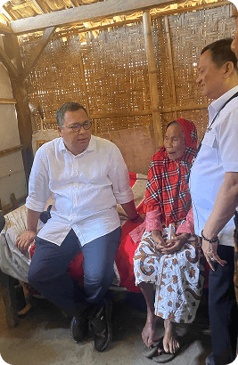
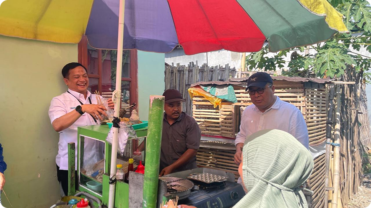
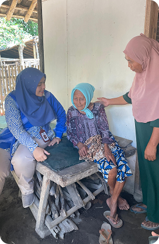
Konsistensi dan Arah Kebijakan ke Depan
Selama 2020–2024, percepatan penghapusan kemiskinan ekstrem menjadi bagian penting dari strategi
transformasi ekonomi nasional. Hal ini ditegaskan dalam Instruksi Presiden No. 4 Tahun
2022,
serta pidato Nota Keuangan RAPBN 2022–2024. Fokus anggaran diarahkan pada perlindungan sosial,
penurunan stunting, pengendalian inflasi, dan penciptaan lapangan kerja.
Ke depan, strategi pengentasan kemiskinan harus bersifat multidimensional, mencakup pendidikan,
kesehatan, ketenagakerjaan, perlindungan sosial, hingga pemanfaatan teknologi dan data.
Dalam dunia yang berubah cepat, metode pengukuran kemiskinan pun perlu ditinjau ulang.
Pendekatan basic needs yang selama ini digunakan, hanya mengukur kemampuan memenuhi
kebutuhan
dasar, perlu bertransformasi ke pendekatan basic rights yang lebih holistik: menilai hak
atas
pendidikan, kesehatan, pekerjaan, dan kehidupan layak.
Menuju Indonesia yang Adil dan Sejahtera
Dengan menempatkan keadilan sosial, hak dasar warga negara, dan sinergi lintas sektor sebagai
fondasi, Indonesia dapat terus memperkuat upaya menuju kesejahteraan berkelanjutan.
Seperti Ibu Aruni yang kini tersenyum di depan warung kecilnya, hasil kerja keras dan kebijakan
yang tepat menunjukkan bahwa keluar dari kemiskinan bukan lagi impian, melainkan kenyataan yang
bisa dicapai bersama.

 Pemberdayaan Ekonomi: Pembinaan keluarga dan Kredit Usaha Rakyat (KUR).
Pemberdayaan Ekonomi: Pembinaan keluarga dan Kredit Usaha Rakyat (KUR).